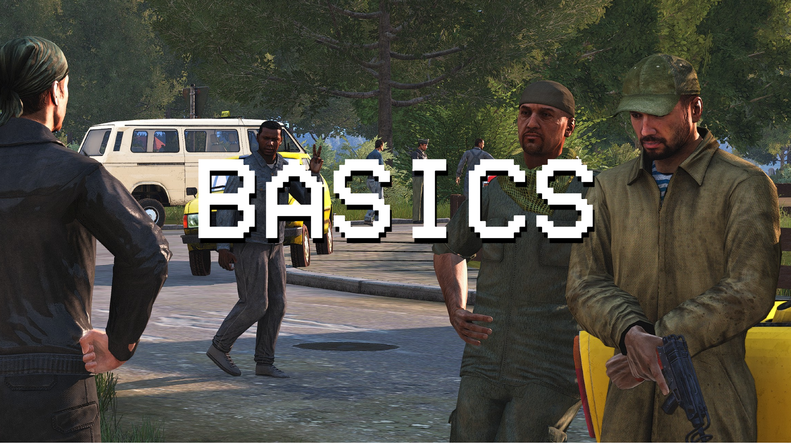

1. Join and communicate
Add here: Discord details, operation schedule, naming expectations and who new players should contact.
Install and test TeamSpeak and TFAR before operation time. The TFAR guide covers setup and controls.
The practical route from joining the group to being ready for an operation.

Add here: Discord details, operation schedule, naming expectations and who new players should contact.
Install and test TeamSpeak and TFAR before operation time. The TFAR guide covers setup and controls.
Import the preset supplied for the current campaign and allow Steam Workshop to finish every download. Misfits Aux is universal; specialist campaign packs are loaded only when that campaign requires them.
Know your ACE interaction and self-interaction keys, medical-menu key, TFAR transmit keys and how to change addon bindings. Consider changing grenade throw away from a single key beside your medical key.
ACE list-style interaction menus and an always-visible cursor can make dense menus easier to use.
Add here: expected arrival time, slotting process, server information and any training mission.
Before briefing, confirm your controls, radio plugin, loaded modset and audio. Technical setup during deployment delays everybody.
Roles are selected in advance or in the mission lobby. Listen to your team leader, remain with your element, communicate, and help the people around you. Nobody benefits from an isolated player requiring a separate rescue mission.
Open the map and read the briefing tabs. They may contain objectives, enemy strength, civilian presence, rules of engagement, support, resupply and reinsertion information.
Your kit may be assigned or built from a role-restricted arsenal. Check weapons, magazines, medical supplies, navigation tools and radios. Resupply is based on authorised starting equipment, so an enemy weapon may be difficult to replenish later.
Respawn normally returns you to a staging area. Regroup and resupply before using the available rally point, squadmate deployment or transport request. Do not immediately deploy into an unsafe rally.
| Topic | Expectation |
|---|---|
| ACE | Try ACE interaction when a vanilla action is absent. Read the medical guide before treating serious casualties. |
| Vehicles | Vehicles are normally available unless the briefing says otherwise, but designated crew and pilots have priority. Garage vehicles may have limited spawns and cannot necessarily be returned. |
| DLC | You may join without some optional DLC but cannot freely use its equipment. A compatibility-data mod does not grant access to DLC terrain or assets. |
| Problems | Describe the exact symptom, item, action and error. “It doesn't work” is much harder to fix than a reproducible report. |
Use ACE Self Interaction → Equipment → Grasscutter to flatten a small patch of grass obstructing a firing position. It is a visibility tool, not a method for removing scenery.
Use the available earplug action during loud vehicle rides or sustained firing. They reduce game sound while keeping TFAR voices intelligible; remember to remove them when situational audio matters.
You do not need to memorise every system. You do need to know your basic controls, communicate when unsure, and arrive prepared enough that the operation can start.